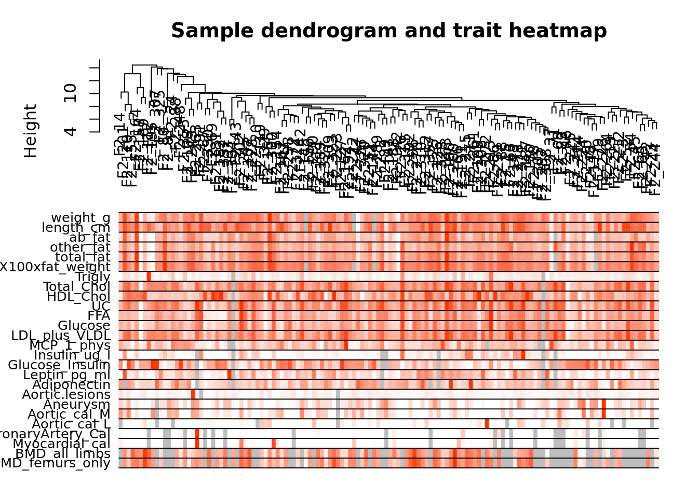
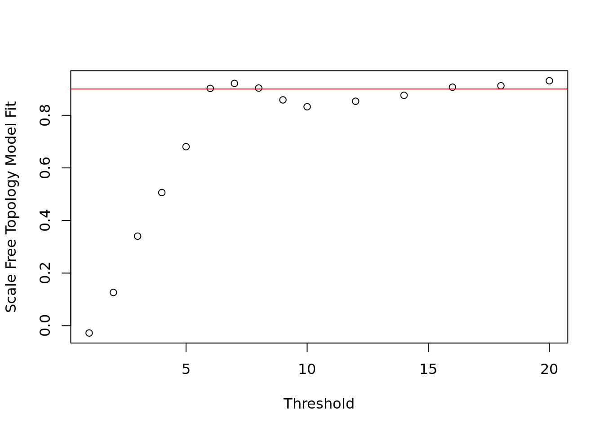
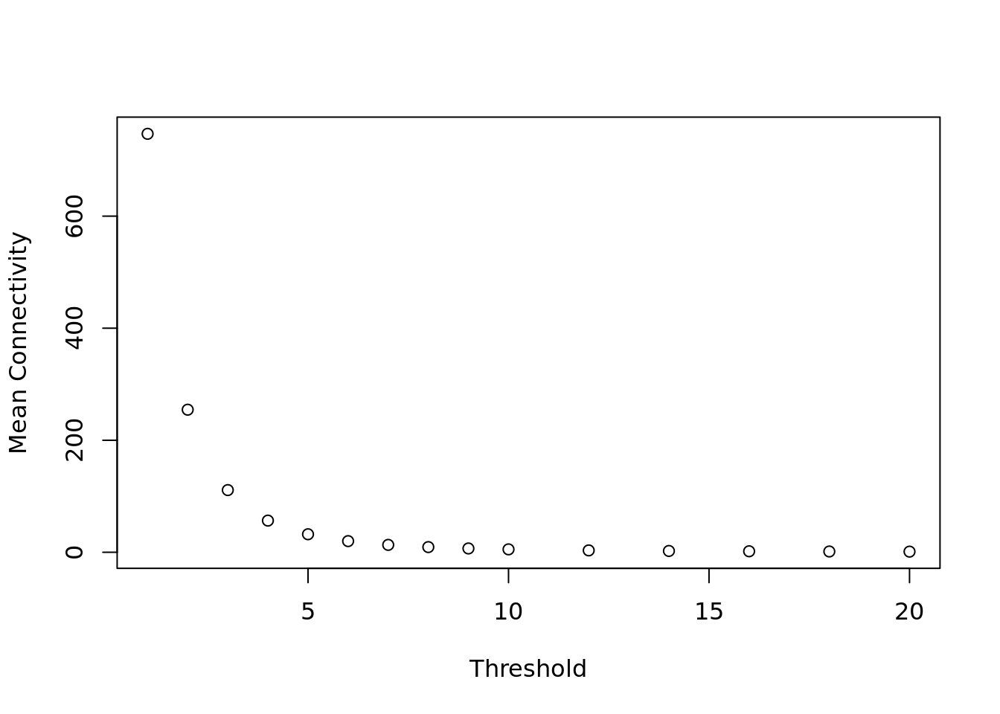
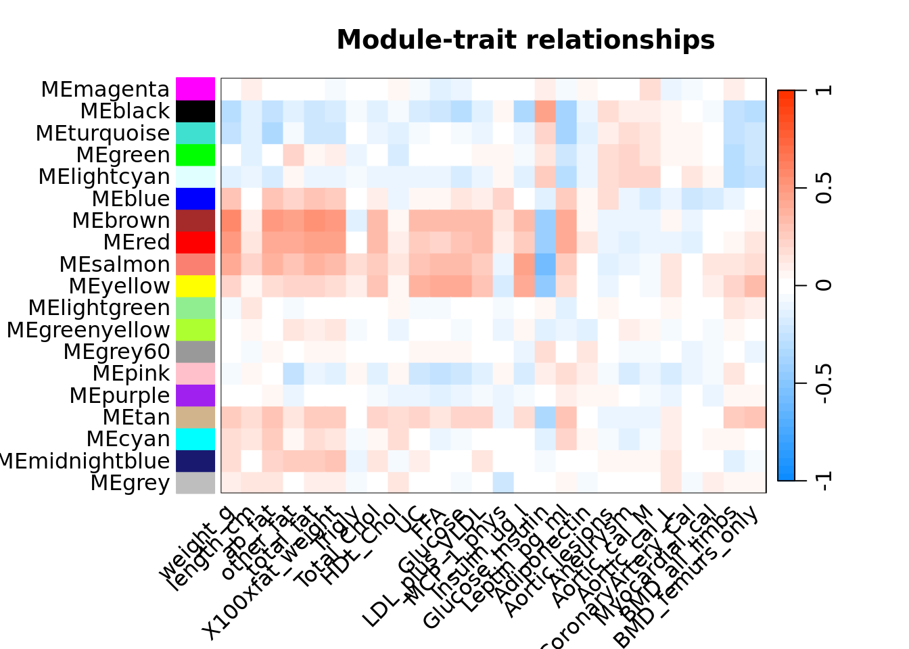

Weighted Gene Co-expression Network Analysis (WGCNA) is a powerful bioinformatics method used to describe the correlation patterns among genes across multiple samples. The method identifies gene modules, summarizes them using module eigengenes, and correlates these with external traits or phenotypes.
The Basics of WGCNA
Gene co-expression networks are built by calculating pairwise correlations between gene expression profiles. To capture biological significance and robustness, WGCNA uses a soft-thresholding power to transform the correlation matrix into an adjacency matrix. This adjacency matrix \(a_{ij}\) represents the connection strength between genes \(i\) and \(j\), defined as:
\[
a_{ij} = |cor(x_i, x_j)|^\beta
\]
Where: - \(cor(x_i, x_j)\) is the correlation between gene \(i\) and gene \(j\). - \(\beta\) is the soft-thresholding power, chosen to approximate scale-free network topology.
Module Identification
Modules are groups of highly interconnected genes. They are identified using hierarchical clustering of the Topological Overlap Matrix (TOM), which measures the similarity of gene neighborhoods. The TOM is calculated as:
\(k_i, k_j\) = The degree (sum of edge weights) of nodes \(i\) and \(j\), respectively.
Intuitively, the numerator combines the shared neighbors and the direct connections between \(i\) and \(j\). The denominator normalizes this value based on the smaller degree of the two nodes (\(min(k_ik_j)\)), ensuring comparability across the network.
TOM thus accounts for Shared Neighbors - Nodes that are not directly connected but share many neighbors will have a high TOM value. This captures indirect relationships, making TOM more robust to noise than simple pairwise correlations. It is also a weighted measure: TOM is based on weighted adjacency values, allowing it to reflect the strength of relationships rather than just their presence or absence.
Applications in Systems Biology
By identifying gene modules and their relationships with traits, WGCNA facilitates the discovery of key drivers and functional insights in systems biology. This tutorial applies WGCNA to liver expression data from female mice, focusing on identifying gene modules related to body weight.
The following object is masked from 'package:stats':
hclust
Attaching package: 'WGCNA'
The following object is masked from 'package:stats':
cor
Background and Dataset Overview
Obesity is a major public health concern in many developed countries. While some people appear to stay lean no matter what or how much they eat, others appear to be genetically predisposed to obesity. The genetic similarity between mouse and human makes the mouse a promising mammalian model system to study obesity.
The mouse strain C57BL/6J is susceptible to a variety of ailments related to atherosclerosis, diabetes, obesity, and heart disease to which the mouse strain C3H/HeJ is resistant. The offspring mice of this F2 mouse intercross are expected to show a significant spectrum of atherosclerosis and metabolic syndrome responses to a high-fat diet. A variety of physiological traits were measured, including mouse body weight, fat mass, insulin, glucose, free fatty-acid levels in the blood, and cholesterol fractions (HDL and LDL + VLDL). Excerpt From: Steve Horvath. “Weighted Network Analysis.”
We will use microarray data from the females in the F2 mouse intercross to examine the large-scale organization of the gene co-expression network in liver, and find gene modules associated with body weight.
Download and set your working directory to the location of these files.
# Set the working directory# In RStudio: Session -> Set Working Directory -> Choose Directorysetwd("path/to/your/data")
Data Input and Pre-Processing
This is the first step of any network analysis. I show here how to load typical expression data, pre-process them into a format suitable for network analysis, and clean the data by removing obvious outlier samples. The expression data is contained in the file LiverFemale3600.csv, linked above. After starting an R session, we load the requisite packages and the data, after appropriately setting the working directory.
# Load expression dataexp_data <-read.csv("LiverFemale3600.csv")##### Split and format datafeature_data <- exp_data[, 1:8] # Obtain data related to samplesassay_data <- exp_data[, 9:143] # Obtain gene expression data for samples# Add names to samplesrow.names(assay_data) <- feature_data$substanceBXH# We must transpose the matrix so we have samples as columnsassay_data <-t(assay_data)
Now let’s check the expression matrix is in the required format (genes x samples):
Note that the genes are referred to by the probe names (e.g. MMT00000044) (this data comes from expression microarray analysis). This is fine for now, but later will hamper the interpretation of results.
Identification of outlier microarray samples
Next we cluster the samples to see if there are any obvious outliers.
##### Cluster Data and remove outliers# We are now going to calculate how similar the samples to each otherdistance_matrix <-dist(assay_data)# We will now perform hierarchical clustering with the distance matrixsampleTree <-hclust(distance_matrix, method ="average")# Now plot the dendogramplot(sampleTree)# Add a horizontal line - we are going to take the biggest cluster below hereabline(h =15, col ="red")
It appears there is one outlier (sample F2_221). One can remove it by hand, or use an automatic approach—we choose a height cut that will remove the offending sample, say 15, and use a branch cut at that height.
# Remove outliers - "cut the tree"clust <-cutreeStatic(sampleTree, cutHeight =15, minSize =10)# How do they belong to clusters?table(clust)
clust
0 1
1 134
# clust 1 contains the samples we want to keep - subset assay_datadatExpr <- assay_data[clust==1, ]
The variable datExpr now contains the expression data ready for network analysis.
Clinical Traits Integration
We now read in the trait data and match the samples for which they were measured to the expression samples. We also visualize the traits data.
clin_data <-read.csv("ClinicalTraits.csv", row.names=2)clin_data <- clin_data[match(rownames(datExpr), rownames(clin_data)), ] # Select samples and order them according to exp_dataclin_data <- clin_data[, -c(30, 15)] # Remove mice attributesdatTraits <- clin_data[, c(10:35) ] # Further selection of mice attributesdatTraits[1:10,1:10]
We now have the expression data in the variable datExpr, and the corresponding clinical traits in the variable datTraits. Before we continue with network construction and module detection, we visualize how the clinical traits relate to the sample dendrogram.
sampleTree2 <-hclust(dist(datExpr), method ="average")traitColors <-numbers2colors(datTraits, signed =FALSE) # Convert traits to a color representation: white means low, red means high, grey means missing entryplotDendroAndColors(sampleTree2, traitColors,groupLabels =names(datTraits), main ="Sample dendrogram and trait heatmap")

In the plot, white means a low value, red a high value, and grey a missing entry.
# Load clinical traitstraitData <-read.csv("ClinicalTraits.csv")# Match traits to expression samplesallTraits <- traitData[, c(2, 11:36)]traitRows <-match(rownames(datExpr), allTraits$Mice)datTraits <- allTraits[traitRows, -1]rownames(datTraits) <- allTraits[traitRows, 1]# Visualize sample dendrogram with traitssampleTree2 <-hclust(dist(datExpr), method ="average")traitColors <-numbers2colors(datTraits, signed =FALSE)plotDendroAndColors(sampleTree2, traitColors, groupLabels =names(datTraits),main ="Sample dendrogram and trait heatmap")
Analysis of network topology to choose the soft thresholding power
Constructing a weighted gene network entails the choice of the soft thresholding power \(\beta\) to which co-expression similarity is raised to calculate adjacency [1]. The authors of [1] have proposed to choose the soft thresholding power based on the criterion of approximate scale-free topology. Here we will use the function pickSoftThreshold that performs the analysis of network topology and aids the user in choosing a proper soft-thresholding power. The user chooses a set of candidate powers, and the function returns a set of network indices that should be inspected, for example as follows:
powers <-c(c(1:10), seq(from =12, to=20, by=2))# Call the network topology analysis function and try these valuessft <-pickSoftThreshold(datExpr, powerVector = powers, verbose =5)
pickSoftThreshold: will use block size 3600.
pickSoftThreshold: calculating connectivity for given powers...
..working on genes 1 through 3600 of 3600
Warning: executing %dopar% sequentially: no parallel backend registered
# Plot the results:# 1) Scale-free topology fit index as a function of the soft-thresholding power# We want the minimal power where the resulting network has a scale-free property.plot(sft$fitIndices[,1], -sign(sft$fitIndices[,3])*sft$fitIndices[,2],xlab="Threshold",ylab="Scale Free Topology Model Fit",)# this line corresponds to using an model filt cut-off of 0.9abline(h=0.90,col="red")

# We can also see how the value affects average connectivityplot(sft$fitIndices[,1], sft$fitIndices[,5],xlab="Threshold",ylab="Mean Connectivity")

The user needs to choose the lowest power for which the scale-free topology fit index curve flattens out upon reaching a high value (in this case, roughly 0.90).
Constructing the gene network and identifying modules is now a simple function call. Remember one must choose the correct value for \(\beta\) based on the analysis of the previous plot.
pow <-6
Network Construction and Module Detection
# This function implements the core of WGCNA - cluster genes and assign to modulesnet <-blockwiseModules(datExpr, power = pow,TOMType ="unsigned", minModuleSize =30,reassignThreshold =0, mergeCutHeight =0.25,numericLabels =TRUE, pamRespectsDendro =FALSE,saveTOMs =TRUE,saveTOMFileBase ="femaleMouseTOM", verbose =3)
Calculating module eigengenes block-wise from all genes
Flagging genes and samples with too many missing values...
..step 1
Cluster size 3600 broken into 2108 1492
Cluster size 2108 broken into 1126 982
Done cluster 1126
Done cluster 982
Done cluster 2108
Done cluster 1492
..Working on block 1 .
TOM calculation: adjacency..
..will not use multithreading.
Fraction of slow calculations: 0.396405
..connectivity..
..matrix multiplication (system BLAS)..
..normalization..
..done.
..saving TOM for block 1 into file femaleMouseTOM-block.1.RData
....clustering..
....detecting modules..
....calculating module eigengenes..
....checking kME in modules..
..removing 1 genes from module 1 because their KME is too low.
..removing 1 genes from module 7 because their KME is too low.
..removing 1 genes from module 8 because their KME is too low.
..removing 1 genes from module 21 because their KME is too low.
..merging modules that are too close..
mergeCloseModules: Merging modules whose distance is less than 0.25
Calculating new MEs...
We have chosen a relatively large minimum module size of 30, and a medium sensitivity deepSplit=2 for cluster splitting. The parameter mergeCutHeight is the threshold for merging of modules. We have also instructed the function to return numeric, rather than color, labels for modules, and to save the Topological Overlap Matrix. The output of the function may seem somewhat cryptic, but it is easy to use. For example, net$colors contains the module assignment, and net$MEs contains the module eigengenes of the modules.
Note: The module eigengene ME is defined as the first principal component of a given module. It can be considered as a representative profile for a given co-expression module, that summarizes the expression patterns of all genes in the module into a single vector.
But what exactly is an eigengene?
Module eigengenes are summary statistics that capture the “gene expression profile” of a particular module in a gene co-expression network (like the ones used in WGCNA). They serve as a representative measure for the overall activity of the genes within a module, simplifying the analysis by reducing the dimensionality of the gene expression data.
How Module Eigengenes Are Calculated:
Create a Gene Co-expression Network:
Genes are grouped into modules based on their co-expression (i.e., genes that show similar expression patterns across samples are clustered together).
Principal Component Analysis (PCA):
For each module, you perform PCA on the gene expression data of the genes within that module. The first principal component (PC1) from this analysis captures the direction of maximum variance (i.e., the most important variation in the expression profiles of the genes within the module).
Module Eigengene:
The first principal component (PC1) of the module is used as the module eigengene. This eigengene represents the overall expression pattern for that module, which can be interpreted as a single “summary” or “profile” of the genes in the module.
Why Module Eigengenes Are Useful:
Dimensionality Reduction: Instead of analyzing each gene individually, module eigengenes provide a summary for each gene module, reducing the complexity of the data.
Biological Interpretation: Module eigengenes represent the combined expression pattern of all genes in a module, making it easier to study the overall behavior of a biological process, pathway, or condition related to that module.
Correlation with Traits: Module eigengenes can be correlated with external traits (e.g., disease status, clinical measures), helping identify modules that are associated with specific biological conditions or phenotypes.
Example:
If you have a module of genes related to immune response, the module eigengene will summarize the expression pattern of all those immune-related genes across samples. A high value of the module eigengene in a certain condition (e.g., cancer) might indicate that the immune-related genes in the module are highly active in that condition.
Thus, module eigengenes are a powerful tool for simplifying the analysis of large-scale gene co-expression networks and understanding the underlying biological processes.
To see how many modules were identified and what the module sizes are, one can use: table(net$colors)
Its output indicates that there are 18 modules, labeled 1 through 18 in order of descending size, with sizes ranging from 609 to 34 genes. The label 0 is reserved for genes outside of all modules. The hierarchical clustering dendrogram (tree) used for the module identification is returned in net$dendrograms[[1]]. The dendrogram can be displayed together with the color assignment using the following code:
Here we see the genes clustered into different modules, corresponding to the different colours in the module colours band.
Correlating modules with external clinical traits
Quantifying module–trait associations
We would like to identify modules that are significantly associated with the measured clinical traits. Since we already have a summary profile (eigengene) for each module, we simply correlate eigengenes with external traits and look for the most significant associations.
# Define numbers of genes and samplesnSamples <-nrow(datExpr)# Calculate module eigen gene values for each module - # Effectively the average expression of all genes in the module accross samplesMEs0 <-moduleEigengenes(datExpr, moduleColors)$eigengenesMEs <-orderMEs(MEs0)# Correlate the modules with the traitsmoduleTraitCor <-cor(MEs, datTraits, use ="p")moduleTraitPvalue <-corPvalueStudent(moduleTraitCor, nSamples)
Plot module-trait correlations
Since we have a moderately large number of modules and traits, a suitable graphical representation will help in reading the table. We color code each association by the correlation value:
# This is to set parameters for plottingpar(mar =c(6, 8.5, 3, 3))# Display the correlation values within a heatmap plotlabeledHeatmap(Matrix = moduleTraitCor,xLabels =names(datTraits),yLabels =names(MEs),ySymbols =names(MEs),colorLabels =FALSE,colors =blueWhiteRed(50),setStdMargins =FALSE,cex.text =0.5,zlim =c(-1,1),main =paste("Module-trait relationships"))

The analysis identifies the several interesting module–trait associations. We will now focus on weight as the trait of interest. Note that for example the brown module represents a group of genes that is correlated with weight, abdominal and other fat levels.
Gene relationship to trait and important modules: Gene Significance and Module Membership
We quantify associations of individual genes with our trait of interest (weight) by defining Gene Significance GS as (the absolute value of) the correlation between the gene and the trait. For each module, we also define a quantitative measure of module membership MM as the correlation of the module eigengene and the gene expression profile. This allows us to quantify the similarity of all genes on the array to every module. Mathematically, for a gene ( g ) in a module ( M ): \[
\text{MM}(g) = \text{cor}(\text{Expr}(g), \text{ME}(M)),
\] where: - \(\text{Expr}(g)\): Gene \(g\)’s expression profile across all samples. - \(\text{ME}(M)\): The module eigengene of module \(M\).
# Some genes in each module are more representative than others of the eigen-gene values.# This is calculated as correlation betwen module eigen genes and gene expression# This can be used to filter large modules to obtain the most important ones using following code:geneModuleMembership <-as.data.frame(cor(datExpr, MEs, use ="p"))MMPvalue <-as.data.frame(corPvalueStudent(as.matrix(geneModuleMembership), nSamples))# Now rename - using the eigen gene names and replacing ME with MMmodNames <-substring(names(MEs), 3)names(geneModuleMembership) <-paste("MM.", modNames, sep="")names(MMPvalue) <-paste("p.MM.", modNames, sep="")
MM ranges from -1 to 1: - High MM values (close to 1): The gene is strongly correlated with the module eigengene, making it a core member. - Low MM values (close to 0): The gene has little to no relationship with the module. - Negative MM values: The gene’s expression pattern is inversely related to the module eigengene.
Why Is Module Membership Useful?
Prioritizing Key Genes in Modules:
Genes with high MM values are considered the “hub” or core genes of the module. These genes are most representative of the module’s behavior and are likely to play central roles in the biological processes associated with the module.
Identifying Candidate Biomarkers:
High-MM genes are strong candidates for biomarkers or therapeutic targets because they drive the module’s co-expression patterns, which may relate to specific phenotypes or traits.
Understanding Module Structure:
MM helps distinguish between:
Core genes: Essential for the module’s coherence.
Peripheral genes: Weakly connected or partially related to the module.
This understanding is valuable for functional annotation and interpretation of the module.
Functional Enrichment Analysis:
MM values can help refine functional enrichment studies. Analyzing only high-MM genes within a module often enhances the biological signal by focusing on genes that are most relevant.
Identifying Outliers or Ambiguous Genes:
Low-MM genes in a module may indicate potential outliers, genes that don’t fit well in any module, or genes that are shared between multiple modules.
Summary output of network analysis results
We have found modules with high association with our trait of interest, and have identified their central players by the Module Membership measure. We now merge this statistical information with gene annotation and write out a file that summarizes the most important results and can be inspected in standard spreadsheet software such as MS Excel or Open Office Calc. Our expression data are only annotated by probe ID names: the command will return probe IDs belonging to the brown module. To facilitate interpretation of the results, we use a probe annotation file provided by the manufacturer of the expression arrays to connect probe IDs (such as MMT00000044 like we saw earlier) to gene names and universally recognized identification numbers (Entrez codes).
We create a data frame holding the following information for all probes: probe ID, gene symbol, Locus Link ID (Entrez code), module color, gene significance for weight, and module membership and p-values in all modules. The modules will be ordered by their significance for weight, with the most significant ones to the left.
annot <-read.csv(file ="GeneAnnotation.csv")probes <-colnames(datExpr)# We use this to match the genes in our experiment with the annotation file column probes2annot <-match(probes, annot$substanceBXH)# Create the starting data framegeneInfo0 <-data.frame(substanceBXH = probes,geneSymbol = annot$gene_symbol[probes2annot],LocusLinkID = annot$LocusLinkID[probes2annot],moduleColor = moduleColors)# Now we add to this the MM data using cbindgeneInfo <-cbind(geneInfo0, geneModuleMembership, MMPvalue)
Now your task - select all genes that belong to the brown module and perform ORA to see if you can find enrichment for any